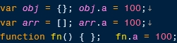
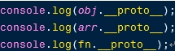
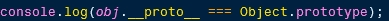
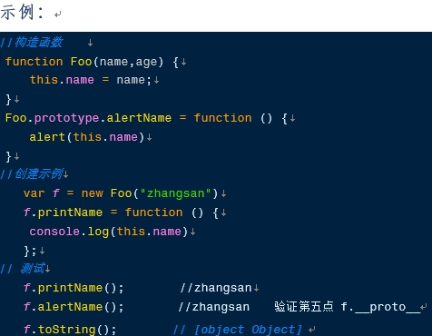
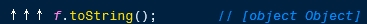
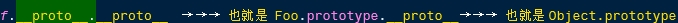
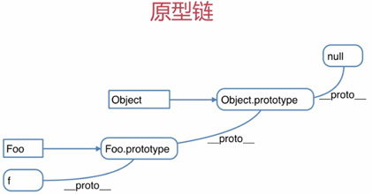
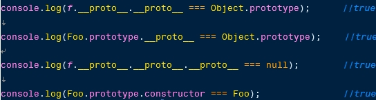

编辑于2018年3月|浏览:342
5条原型规则：
原型规则是学习原型链的基础
①所有的引用类型（数组、对象、函数），都具有对象特性，即可自由扩展的属性（除“null”以外） （对象的动态特征）

②所有的引用类型（数组、对象、函数），都有一个 _proto_（隐式原型或构造器原型）属性，属性值是一个普通的对象
结合第一条，可自由扩展属性是很符合规定的，只不过_proto_这个属性系统已经定义好了

③所有的 函数，都有一个 prototype属性（显式原型），属性值也是一个普通对象{包含很多内容}
console.log(fn.prototype); //{constructor: ƒ}
结合第一条，可自由扩展属性是很符合规定的，只不过 prototype这个属性系统已经定义好了
小节： prototype和 __proto__区别:
prototype是函数才有的属性；__proto__是每个对象才有的属性，同时函数也是对象
多数情况下：__proto__ === constructor.prototype(通过Object.create()创建的对象不适用此等式)
④所有的引用类型（数组、对象、函数）， >__proto__属性值指向它的构造函数的 ”prototype”属性值

obj对象的__proto__属性全等于 Object构造器的prototype属性
⑤当对象试图得到某个属性时，如果这个对象本身没有这个属性，那么会去它的__proto__(即它的构造函数的prototype)中寻找

原型链：
f也是对象，它也能扩展属性，在f中寻找toString方法，看第⑤条是不是也要去它的隐式原型去找，即：

